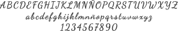
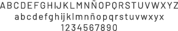
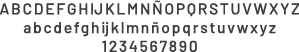
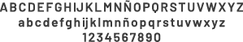

ELECCIONES TIPOGRÁFICAS Y PALETA CROMÁTICA
Tipografías
Dancing Script Regular - Esta tipografía es utilizada para la botonera, que al ser la única diferente, y también por su ubicación permite ser rápidamente reconocible.
La tipografía utilizada es Barlow en algunas de sus variables (Regular, Medium y Semi Bold) y en diferentes tamaños para proporcionar jerarquía a cada uno de los elementos. Fue elegida, por su excelente legilibilidad y comprensión para el usuario.
- Dancing Script (botonera):

- Barlow Regular (Bloques de texto):

- Barlow Medium (Subtítulos):

- Barlow Semi Bold (Títulos):

Paleta cromática
La paleta cromática consta de colores desaturados, fríos y cálidos. Esta elección esta inspirada en el personaje Bo Peep, y su tierna vestimenta.